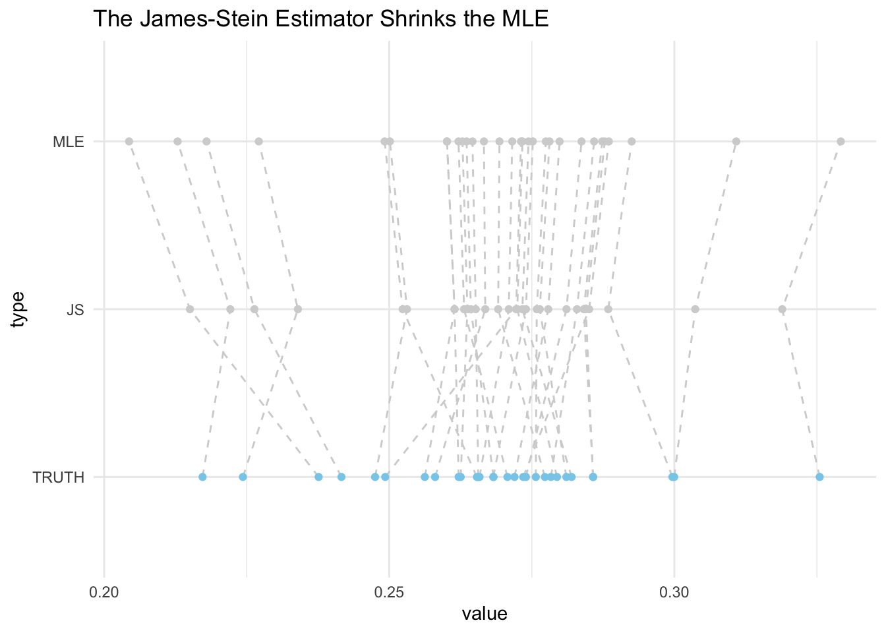

#mle m=1
set.seed(677)
means <- c(0)
err <- replicate(10000, {
p <- rnorm(1, means, 1)
estimate <- p
estimate-means
})
risk <- mean(err^2)
#js m=1
set.seed(677)
means <- c(0)
err <- replicate(10000, {
p <- rnorm(1, means, 1)
estimate <- (1-(-1/sum(p^2)))*p
estimate-means
})
risk <- mean(err^2)Study Notes on James–Stein Estimation
Historical Context
1912-1922: R.A. Fisher discovered and established maximum likelihood estimation
- provides nearly unbiased estimates with nearly minimum variance
1955: Charles Stein of Stanford University discovered the phenomenon that is today known as Stein’s paradox
went against 150 years of parameter estimation
went against traditional statistical theory that no other estimation rule is “better” than the use of observed averages to estimate unobserved quantities
1961: Charles Stein and Willard James developed a method of estimation that is more accurate on average than MLE or observed average when estimating more than 2 parameters
Idea was resisted for a long period of time before being accepted
Admissibility
Let \(\theta^*\) represent the true value of a parameter \(\theta\) in some statistical model and \(\hat{\theta}\) be our estimator of \(\theta\) which is a function of the data
Loss function \(L(\theta^*, \hat{\theta})\) assesses quality of our estimator given observations
Risk function \(R(\theta^*, \hat{\theta}) = \mathbb{E}_{p(x|\theta^*)}[L(\theta^*, \hat{\theta}(x))]\) assesses quality of our estimator over all possible data
- the risk of the estimator is the expectation of the loss function over the data distribution
For two different estimators \(\hat{\theta}^{(1)}\) and \(\hat{\theta}^{(2)}\) with risks \(R(\theta^*, \hat{\theta}^{(1)})\) and \(R(\theta^*, \hat{\theta}^{(2)})\), \(\hat{\theta}^{(1)}\) dominates \(\hat{\theta}^{(2)}\) if
- \(R(\theta^*, \hat{\theta}^{(1)}) \leq R(\theta^*, \hat{\theta}^{(2)})\;\;\forall \theta^* \in \Theta\)
- \(\exists \theta^*\) such that \(R(\theta^*, \hat{\theta}^{(1)}) < R(\theta^*, \hat{\theta}^{(2)})\)
\(\hat{\theta}^{(1)}\) is not dominated by any other estimator is therefore admissible
\(\hat{\theta}^{(2)}\) is dominated by \(\hat{\theta}^{(1)}\) and is therefore inadmissible
What is the James-Stein Estimator
- Setting
- \(p\) Gaussian random variables \(X_1, X_2, …, X_p\) where \[X_i \sim N(\mu_i, \sigma^2)\], \(i = 1,…,p\)
- \(\sigma^2\) is known and we’d like to estimate each \(\mu_i\)
- The average is an admissible estimator if there is just one mean, \(\theta\) to be estimated (\(p=1\))
- The average is also admissible for estimating two means (\(p=2\))
- Stein’s Paradox: when the number of means exceeds 2 (\(p\geq3\)), estimating them by each of their means is an inadmissible procedure
- General idea: the James-Stein estimator works by shrinking individual averages to the grand average, which is the average of the averages
- Basic formula for James-Stein estimator: \(z = \bar{y} + c(y - \bar{y})\)
- James-Stein estimator can be viewed as a special case of empirical Bayes estimation
- \(\bar{y}\) is grand average of averages
- \(c\) is a shrinkage factor determined by observed averages \[c = 1 - \frac{(k-3)\sigma^2}{\sum(y-\bar{y})^2}\] where \(k\) is number of unknown means
- \(y\) is the average of a single set of data
- other expressions exist but differ mainly in detail (all have common shrink factor \(c\))
- Another formula for James-Stein estimator: \(\hat\theta_{JS} = \left( 1-\frac{(m-2)\sigma^2}{||y||^2} \right)y\)
- \(m\) is the number of parameters
- \(y\) is a vector of data
- \(||y||^2\ge0 \Rightarrow \left( 1-\frac{(m-2)\sigma^2}{||y||^2} \right) < 1\)
- If \(||y||^2 > (m-2)\sigma^2\), then the James-Stein estimator for each \(\mu_i\) is shrunk towards 0 compared to LS estimator
- If the L2 norm of the data vector \(y\) exceeds the variance times \(m-2\), then the James-Stein estimator regularizes the estimates of each \(\mu_i\) by shrinking them to 0
- If \(||y||^2 < (m-2)\sigma^2\), then the James-Stein estimator for each \(\mu_i\) flips the sign
- James-Stein estimator has many expressions because you can shrink each \(\mu_i\) towards any pre-chosen, arbitrary point
Simple Example
- \(X_1 \sim N(\mu_1,1)\) and we would like to estimate \(\mu_1\) when true value \(\mu_1^* = 0\)
- Use squared error loss function
Taking a random sample of 10,000 from 1 normal distribution with mean 0 and standard deviation 1:
the risk of the MLE estimator is approximately 0.9963 while the risk of the James-Stein estimator is 51375.3 so the MLE is admissible.
Taking a random sample of 10,000 from 2 normal distributions with means 0 and 1 and standard deviation 1:
#mle m=2
set.seed(677)
means <- c(0, 1)
err <- replicate(10000, {
p <- rnorm(2, means, 1)
estimate <- p
estimate-means
})
risk <- mean(err^2)
#js m=2
set.seed(677)
means <- c(0, 1)
err <- replicate(10000, {
p <- rnorm(2, means, 1)
estimate <- (1-(0/sum(p^2)))*p
estimate-means
})
risk <- mean(err^2)the risk of the MLE estimator and James-Stein estimator are both approximately 0.9936. When the number of parameters you are estimating equal 2, the numerator of the James-Stein estimator equals zero and the estimator will equal the MLE.
Taking a random sample of 10,000 from 3 normal distributions with means 1, 2, and -1 and standard deviation 1:
#mle m=3
set.seed(677)
means <- c(1,2,-1)
err <- replicate(10000, {
p <- rnorm(3, means, 1)
estimate <- p
estimate-means
})
risk <- mean(err^2)
#js m=3
set.seed(677)
means <- c(1,2,-1)
err <- replicate(10000, {
p <- rnorm(3, means, 1)
estimate <- (1-(1/sum(p^2)))*p
estimate-means
})
risk <- mean(err^2)the risk of the MLE estimator is approximately 1.005 while the risk of the James-Stein estimator is 0.9307. The MLE is now inadmissible.
Simple Baseball Example
Each player’s batting ability is normally distributed
\(n = 18\) major league baseball players
\(y\) = batting average for each player after first 45 times at bat in the 1970 season
\(\bar{y}\) = grand average (average of averages)
\(z\) = resulting shrunken value for each player which represents the James-Stein estimator of that player’s batting ability
- predicts true batting ability more accurately than individual batting averages
\(c\) = shrinking factor constant
if \(c=1\), the James-Stein estimator for a player equals their batting average
determined by collection of all observed averages
\(\theta\) = true batting ability of each player which is approximated by their performance for the remainder of the 1970 season
Example: Thurman Munson was in a slump in 1970 with \(y=0.178\). \(\bar{y}=0.265\) and \(c=0.212\) giving that his estimated batting ability increased to \[z = 0.265 + 0.212(0.178-0.265) = 0.247\]
- James-Stein estimator can also be thought of as a “shrinkage” estimator that shrinks the estimated batting ability to the overall average of the data points which is the grand average \(\bar{y} = 0.265\)
Loss function: Total squared error \[\sum_{i=1}^{18}(\theta-\hat{\theta})^2\] where \(\hat{\theta}\) is \(z\) or \(y\)
Observed batting averages \(y\) have total squared error of 0.077
James-Stein estimators \(z\) have total squared error of 0.022
- 3.5 times as accurate
Comparing MLE and James-Stein for Estimating Batting Averages
Following this code
\(\hat{\theta}^{JS}= \bar{p} + \left[ 1 - \frac{(k-3)\sigma^2}{\sum(p-\bar{p})^2} \right](p - \bar{p})\)
goal is to estimate batting averages TRUTH, \(P_i\)
randomly sample 30 players w/ total hits above 500
\(p_i\) is each player’s MLE value - batting average in M at bats
in following example, M is different for each player so the median at bats was taken \((M=1533)\)
\(p_i \sim Bi(1533, P_i)/1533\)
Using the Normal approximation
\(\mu = \frac{1533*P_i}{1533} = P_i\)
\(\sigma^2 = \frac{1533*\bar{p}*(1-\bar{p})}{1533^2} = \frac{\bar{p}*(1-\bar{p})}{15815335.5}\)
\(\Rightarrow p_i \sim N(P_i, \sigma^2_0)\) where \(\sigma^2_0 = \frac{\bar{p}(1-\bar{p})}{1533}\)
Randomly select 30 players w/ total hits > 500
library(Lahman)
suppressPackageStartupMessages(library(tidyverse))
set.seed(50)
players <- Batting %>%
group_by(playerID) %>%
summarise(AB_total = sum(AB),
H_total = sum(H)) %>%
na.omit() %>%
filter(H_total>500) %>%
sample_n(size=30) %>%
pull(playerID) - Calculate the batting averages TRUTH for each player (across all seasons, total hits/total at bats) that we will try to estimate using MLE and James-Stein estimators
TRUTH <- Batting %>%
filter(playerID %in% players) %>%
group_by(playerID) %>%
summarise(AB_total = sum(AB),
H_total = sum(H)) %>%
mutate(TRUTH = H_total/AB_total) %>%
select(playerID,TRUTH)- Randomly select 5 observations/years for each player as sample
- MLE = total hits/total at bats for those 5 observations
set.seed(50)
obs <- Batting %>%
filter(playerID %in% players) %>%
group_by(playerID) %>%
do(sample_n(., 5)) %>%
group_by(playerID) %>%
summarise(AB_total = sum(AB),
H_total = sum(H)) %>%
mutate(MLE = H_total/AB_total) %>%
select(playerID,MLE,AB_total) %>%
inner_join(TRUTH,by="playerID")- Calculate James-Stein estimator using formula above
- Get data frame that includes each estimator and the truth for each player
p_=mean(obs$MLE)
N = length(obs$MLE)
df <- obs %>%
mutate(sigma2 = (p_*(1-p_))/median(obs$AB_total),
JS=p_+(1-((N-3)*sigma2/(sum((MLE-p_)^2))))*(MLE-p_)) %>%
select(-AB_total,-sigma2)- Plot to show shrinkage
df %>%
gather(type,value,2:4) %>%
mutate(is_truth=+(type=="TRUTH")) %>%
mutate(type = factor(type, levels = c("TRUTH","JS","MLE"))) %>%
arrange(playerID, type) %>%
ggplot(aes(x=value,y=type))+
geom_path(aes(group=playerID),lty=2,color="lightgrey")+
scale_color_manual(values=c("lightgrey", "skyblue"))+ #truth==skyblue
geom_point(aes(color=factor(is_truth)))+
guides(color=FALSE)+ #remove legend
labs(title="The James-Stein Estimator Shrinks the MLE")+
theme_minimal()Warning: The `<scale>` argument of `guides()` cannot be `FALSE`. Use "none" instead as
of ggplot2 3.3.4.
- Compare the predictions overall between MLE and James-Stein
- \(\sum_i(MLE_i - TRUTH_i)^2\) and \(\sum_i(JS_i - TRUTH_i)^2\)
errors <- df %>%
mutate(mle_pred_error_i = (MLE-TRUTH)^2,
js_pred_error_i = (JS-TRUTH)^2) %>%
summarise(js_pred_error = sum(js_pred_error_i),
mle_pred_error = sum(mle_pred_error_i))- \(0.00247 < 0.00360 \Rightarrow \mathop{\mathbb{E}} \left [||\hat{\mu}^{JS} - \mu||^2 \right] < \left [||\hat{\mu}^{MLE} - \mu||^2 \right]\)